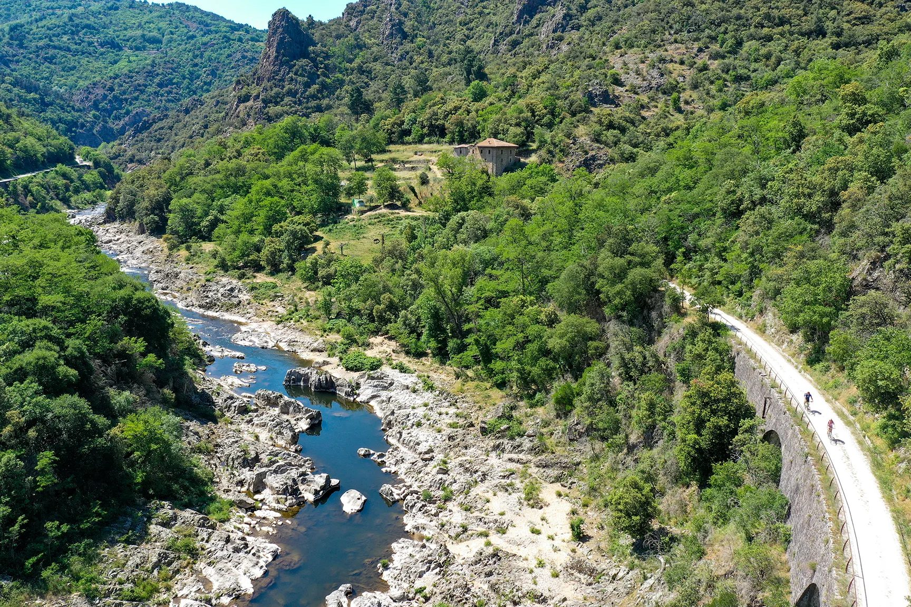

De Dolce Via volgt het tracé van een oude lokale spoorlijn die in 1968 werd opgeheven en is een van de mooiste groene routes van de Ardèche. Het vlakke, veilige wegdek maakt haar toegankelijk voor iedereen, van gezinnen met kinderen tot geoefende fietsers. De toegangen tot het dal van de Eyrieux liggen op ongeveer twintig minuten van Les Cabritas in Flaviac.

Een oude spoorlijn die een groene route werd
De Dolce Via volgt het tracé van de voormalige spoorlijn door het dal van de Eyrieux, waarvan de viaducten en tunnels zorgvuldig zijn gerestaureerd voor fietsers en wandelaars. Afhankelijk van het traject verbindt de volledige route Saint-Laurent-du-Pape met Saint-Agrève en Lamastre via Le Cheylard, over bijna 90 kilometer. U kunt natuurlijk ook maar een deel afleggen, naargelang uw zin en de tijd die u heeft.
Afwisselende landschappen langs het water
De route volgt de rivier de Eyrieux en doorkruist steeds wisselende landschappen: weelderige bossen, schilderachtige dorpjes en spectaculaire oude spoorwegbouwwerken boven de kloven. De Dolce Via sluit ook aan op de ViaRhôna, de grote fietsroute langs de Rhône, zodat u een volledig veilige, complete lus kunt maken. Dankzij de vele fietsverhuurders, ook met elektrische fietsen, kunt u van de route genieten zonder eigen materiaal mee te nemen.
Goed om te weten voor uw bezoek
Het wegdek, afhankelijk van het traject meestal verdicht grind of asfalt, is geschikt voor zowel racefietsen als hybride fietsen, en op de vlakste stukken ook voor terreinwaardige kinderwagens. Langs de route liggen verschillende picknickplaatsen en waterpunten, vooral bij de oude, omgebouwde stations. Vanaf Les Cabritas ligt het dichtstbijzijnde toegangspunt bij Saint-Laurent-du-Pape of La Voulte-sur-Rhône, op ongeveer twintig minuten met de auto, zodat u het traject kunt kiezen dat bij uw niveau past en aan het eind van de dag makkelijk terugkeert.
Praktische informatie vanuit Les Cabritas
- Afstand vanaf Flaviac: ongeveer 20 min rijden naar de toegangen tot het dal van de Eyrieux
- Afstand vanaf Saint-Alban-Auriolles: ongeveer 1u30 rijden naar de toegangen tot het dal van de Eyrieux (Saint-Laurent-du-Pape)
- Beste periode: het hele jaar, vooral aangenaam in de lente en de herfst
- Ideaal voor: fietsen met het gezin, makkelijk wandelen, alle niveaus
Zin om de Dolce Via te ontdekken vanuit uw vakantiehuis in de Ardèche?
Les Cabritas verwelkomt u in twee vakantiehuizen met privézwembad: in Flaviac, in het hart van de Ardèche, en in Saint-Alban-Auriolles, in het hart van de Zuid-Ardèche.